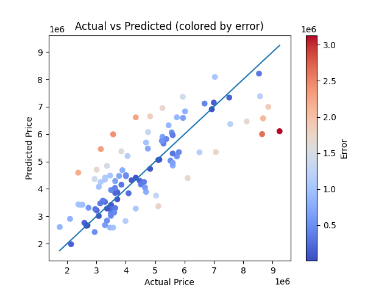
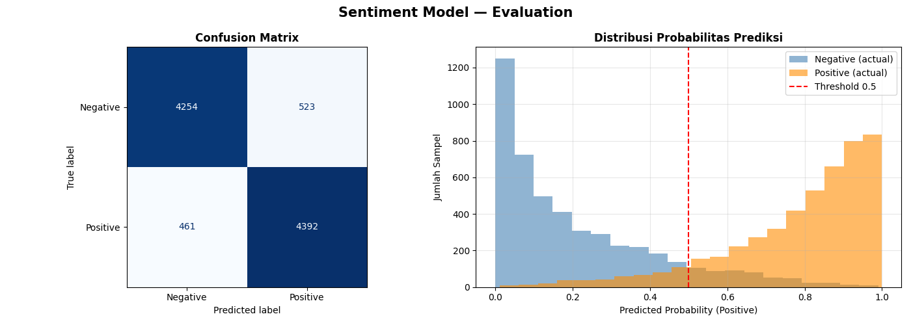

I built a prediction model (using module ofc). So basically, it predicts a house price based on the house such as the total of bedroom, bathroom, has a basement, and others. As the color is warmer, the prediction price is deviated from actual price. And... i think the accuraccy of the prediction is 62%.

I also built a classification model. So, the model answers with 2 options, positive or negative. So, model will be given tests, which is reviews. Model has to answer if the review is positive or negative. And, it's for an accuraccy of the answers. I got 90% accuraccy, 91% recall (from training), 90% precision and 90% f1 (the harmony between precision and recall).